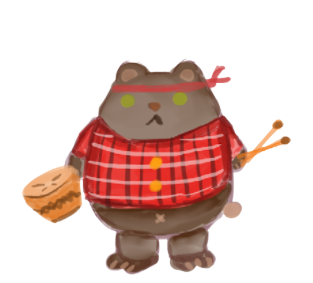

He is a little bear from Indianapolis. His mentor is TAIMA, who sent him to explore the different percussion instruments in the world.

TAIMA
He is Miwok's teacher and has extensive knowledge of the various instruments of persuasion in the world. He decides to send Miwok on a journey he himself made in his youth.